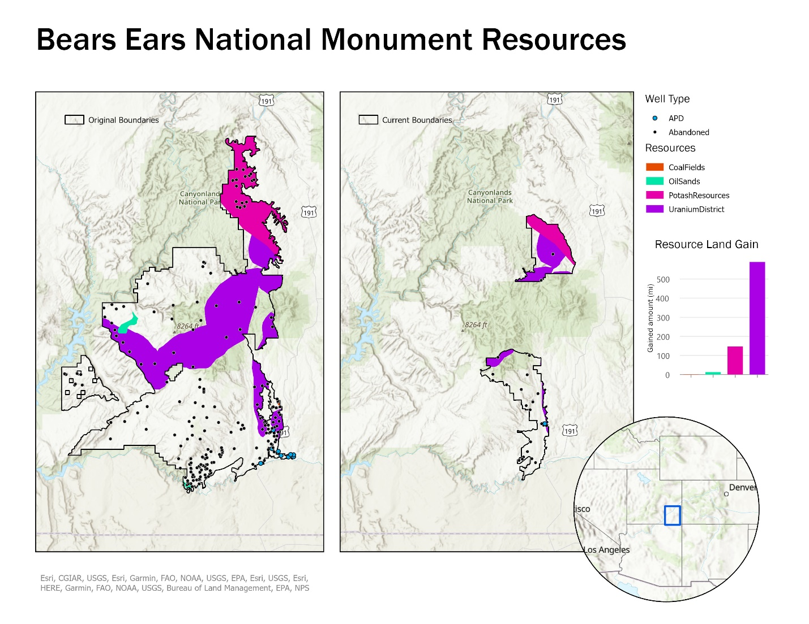

GIS Coursework / Week 09
Bears Ears Georeferencing

Overview
Georeferenced a raster map of mineral resources within Bears Ears National Monument, then analyzed how much of that resource area fell inside the monument’s boundaries before and after they were redrawn.
Process
Set control points to georeference the raster against existing boundary data, then used Clip, Erase, Dissolve, and Calculate Geometry to measure the resource area affected by the boundary change.